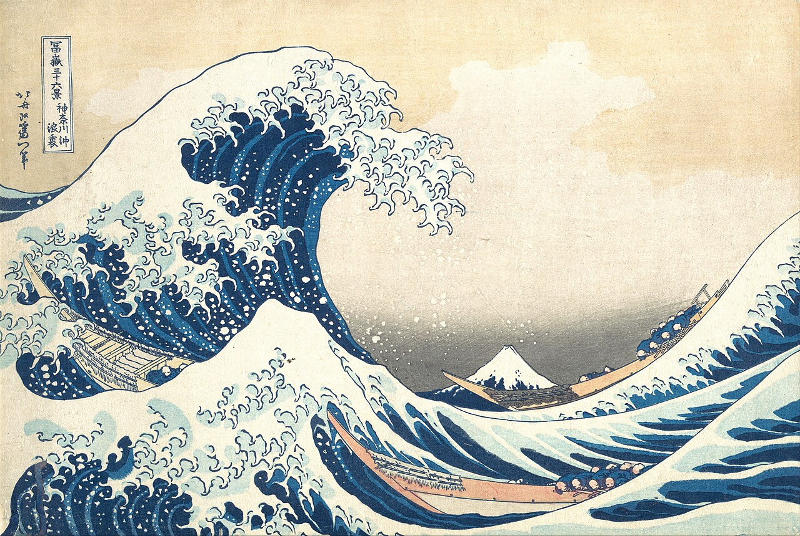
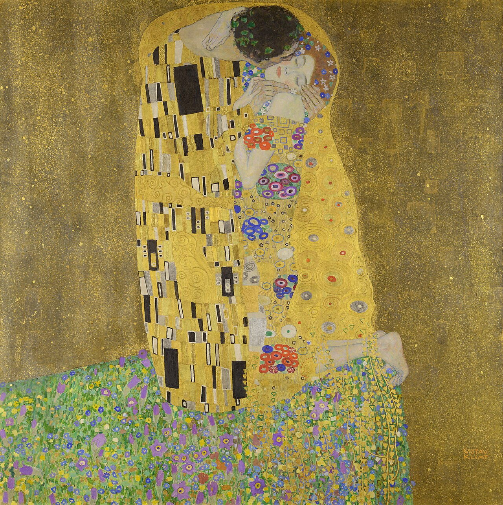
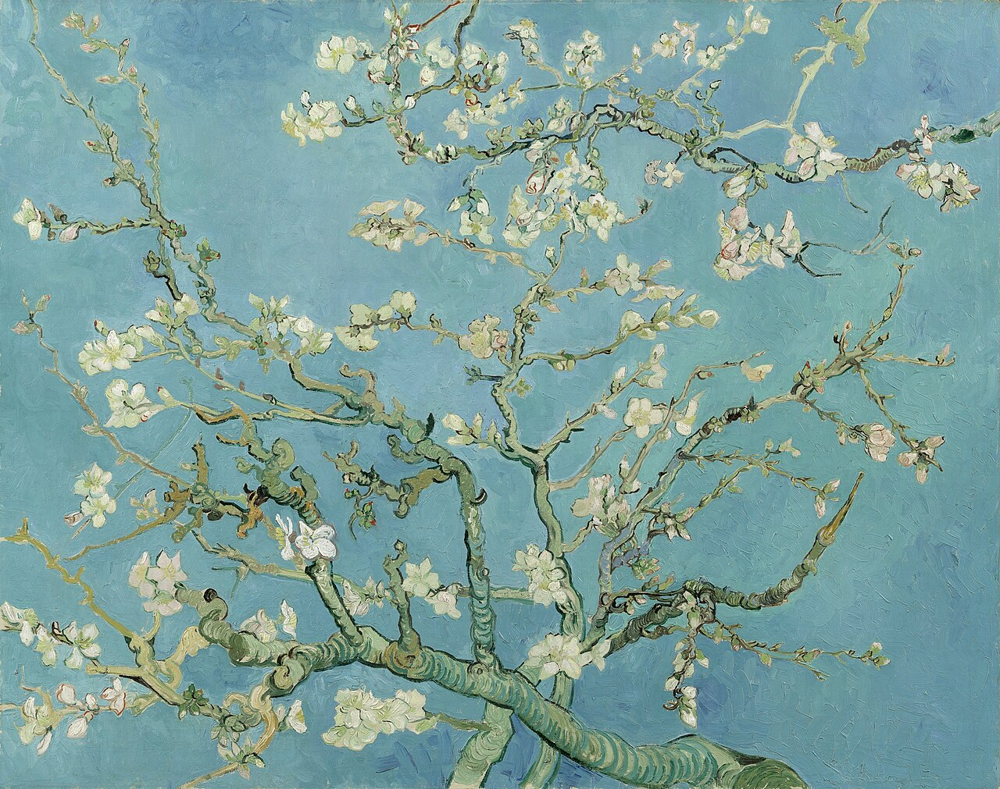
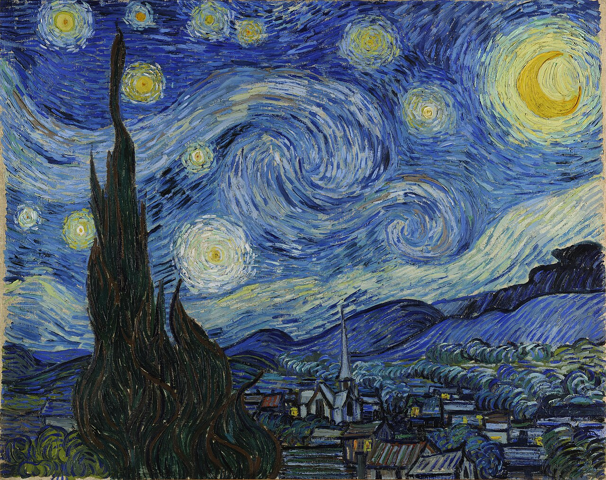

An art collective. Copies after the masters, and originals, painted by hand.




Studio copies of well-known works, made the old way: by looking hard and painting slowly.
New work from the same hands. Each artist keeps their own voice.
We work with student and emerging painters in Austin, paid per piece.